1 파이널 컷의 개괄적 이해
파이널 컷의 Library(라이브러리)는 Finder(윈도의 탐색기)의 Bundle(번들) fcpbundle의 확장자가 동영상 글쓰기의 모든 것을 담아낸다. 즉, 파이널 컷은 기본적으로 fcpbundle 확장자를 갖는 파일에 동영상 제작에 필요한 모든 자원(소리, 동영상, 이미지, 텍스트 등)을 한 곳에 저장한다.
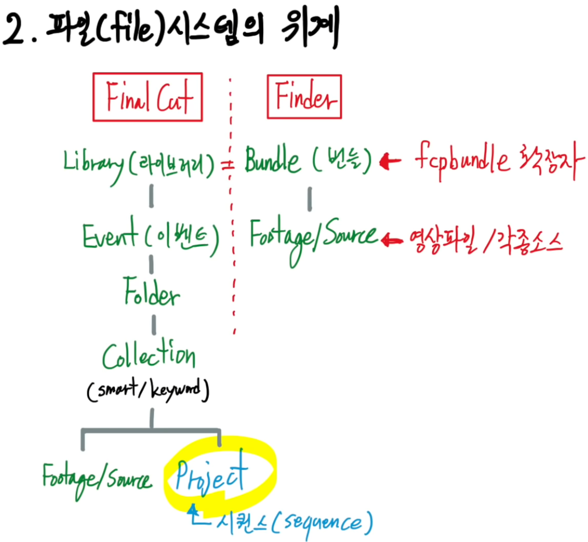
2 Importing & Organizing
2.1 작업대 정리
아무것도 없는 상황에서 시작작업을 설정한다. 이를 위해서 기존 fcpbundle 확장자를 갖는 라이브러리가 열려있는 경우 “Close Library”를 마우스 우클릭으로 실행한다. 그렇게 되면 깔끔한 작업공간이 생성된다.
2.2 신규 라이브러리
“Open Library” 를 클릭한 후 기존 작업된 라이브러리를 가져오거나 New…를 클릭하여 새로운 작업공간을 Finder에서 지정한다. 이를 통해서 Finder와 Final Cut 두 작업공간이 동기화 되었다.
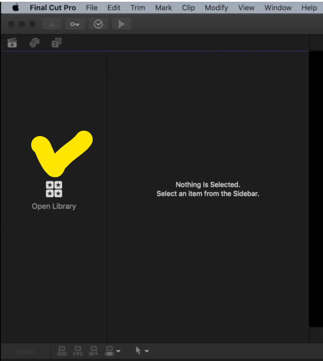
2.3 자원 가져오기
아래 화살표 버튼을 클릭하면 동영상 편집에 사용되는 다양한 외부 자원(동영상, 소리, 이미지, 텍스트, 애니메이션 등)을 가져와서 작업대에서 다양한 요리를 통해 멋진 동영상을 제작할 수 있다.
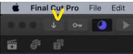
2.4 내장음원
Sound Effects가 내장되어 있어 필요한 음원을 검색하여 동영상에 녹여낸다.
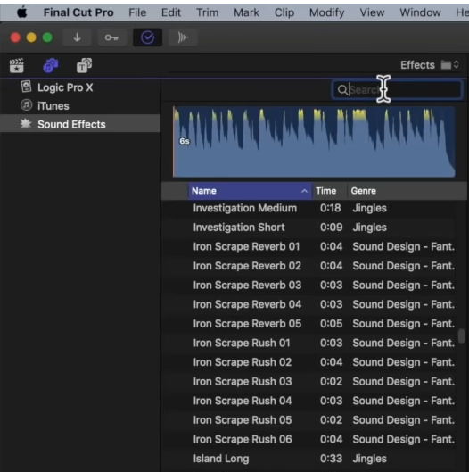
3 Sequencing (시퀀싱하기)
결국 동영상 글쓰기는 프로젝트를 통해 다양한 자원을 시퀀싱하는 것으로 이해할 수 있다. 이를 위해 프로젝트를 생성하여 시퀀싱 작업을 수행한다.
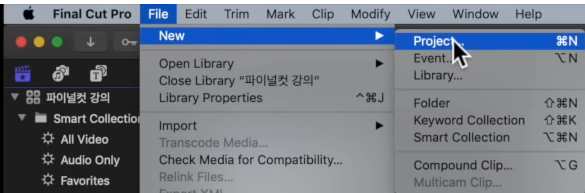
3.1 동영상 잘라내기
요리재료 동영상을 자를 경우 시작점과 끝점을 지정하여 해당 동영상만 잘라내어 편집에 사용한다.
- 동영상 잘라내기 위치 지정
- I, in-point 설정
- O, out-point 설정
- 동영상 삽입위치 지정
- E, Main Storyline 맨뒤에 붙이기
- Q, Main Storyline에 연결하여 삽입
- W, Time Indicator 기준으로 중간에 삽입
3.2 소리 편집
소리를 편집해야 하는 경우 우측 하단에 있는 기능을 활용한다. 우선 동영상과 소리를 분리하고 소리를 편집하는 Blade를 사용하여 편집할 위치를 지정하고 ⌥ (Option, Alt) + ] 혹은 ⌥ (Option, Alt) + [ 을 사용한다. 혹은 단축키로 ⌘ + B… ⌘ + B를 눌러 날려버릴 영역의 지점을 표시하고 A키를 눌러 영역을 선정한 후 ⌫ 삭제키를 눌러 삭제한다. 즉,
- ⌘ + B: 클립 자르기
- ⌥ +
[혹은]앞뒤 잘라내기
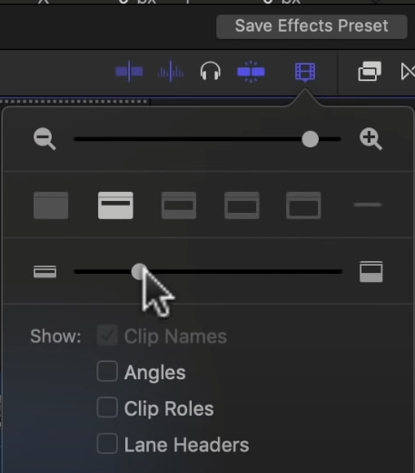
3.3 미세조정
,: 좌측으로 1 프레임 잘라내기 (Trimming)- 쉬프트 ⇧ +
,: 좌측으로 10 프레임 잘라내기 (Trimming)
- 쉬프트 ⇧ +
.: 우측으로 1 프레임 잘라내기 (Trimming)- 쉬프트 ⇧ +
.: 우측으로 10 프레임 잘라내기 (Trimming)
- 쉬프트 ⇧ +
- 쉬프트 ⇧ +
/: 다듬어진 트림 결과 확인
3.4 오디오 삭제
동영상에 오디오가 딸려오는데 경우에 따라서 오디오를 날려버리고 영상만 필요한 경우가 있다. 이럴때 해당 클립을 선택하여 우클릭을 한다. 그리고 난 후 Expand Audio Components를 클릭하여 동영상에서 영상과 오디오를 분리하고 오디오를 삭제한다. 단축키는 ⌃ + ⌥ + S로 오디오를 분리한 후 삭제한다.
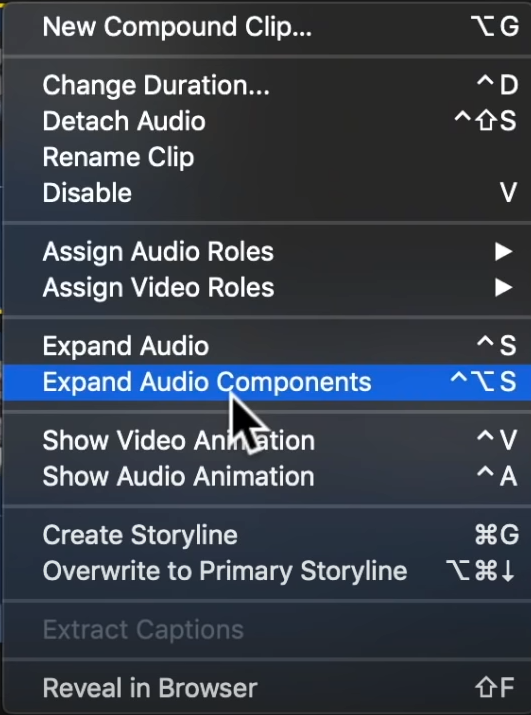
3.5 볼륨조정
오디오 클립을 선택한 후에 단축키를 사용해서 음량을 조절할 수 있다.
- ⌃ + : 1 데시벨 음량 증가
- ⌃ - : 1 데시벨 음량 감소
양쪽 점을 클릭하여 음량에 대한 Fade 효과도 넣을 수 있다.
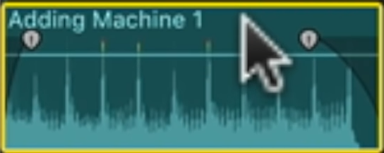
3.6 텍스트 넣기
⌃ + t 단축키를 사용하여 텍스트를 동영상에 올릴 수 있다.
3.7 이미지 넣기
다운로드 받은 이미지를 드래그하여 편집중인 작업대에 넣으면 자동으로 자원으로 삽입되고 이를 시퀀싱에 가져와서 적당한 곳에 넣으면 이미지를 동영상에 넣을 수 있다.
3.8 이미지 이동 변형
이미지를 영상 하단에 버튼을 클릭하여 자유롭게 영상을 이동시키고 크기를 확대축소한다.
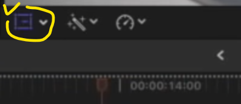
3.9 애니메이션
Crop + Transform 기능을 사용하여 해당 영상에 애니메이션 기능 좌우 이동 혹은 확대축소를 할 수 있다.
3.10 배경음 넣기
음원을 선택하고** R (Range Selection)**을 눌러 배경음을 선택하고 소리를 배경음으로 넣어 줄인다.
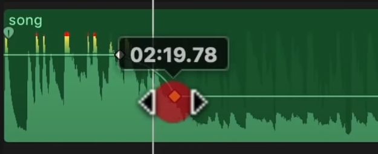
3.11 소리Limiter
3.12 Transition
Cross Dissolve가 기본설정입니다.
3.13 색보정
구매하여 사용한다.
3.14 더빙
⌥ + ⌘ + 8 단축키를 통해 동영상에 목소리를 더빙하여 입힐 수 있다.
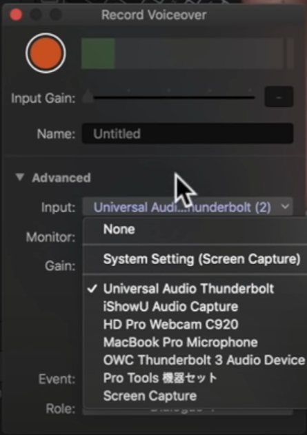
4 Export(내보내기)
4.1 썸네일 만들기
Save Current Frame...을 클릭하여 썸네일을 제작한다.
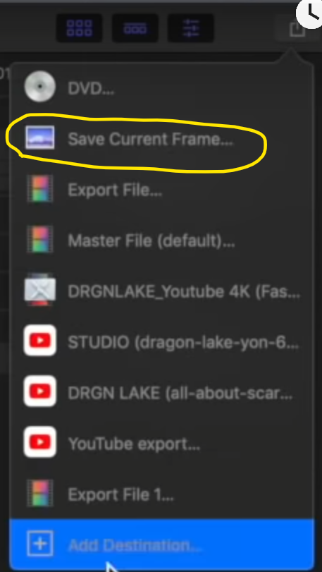
4.2 저장하기
File → Delete Generated Library Files... 선택하여 불필요한 파일들을 정리하여 삭제한다.
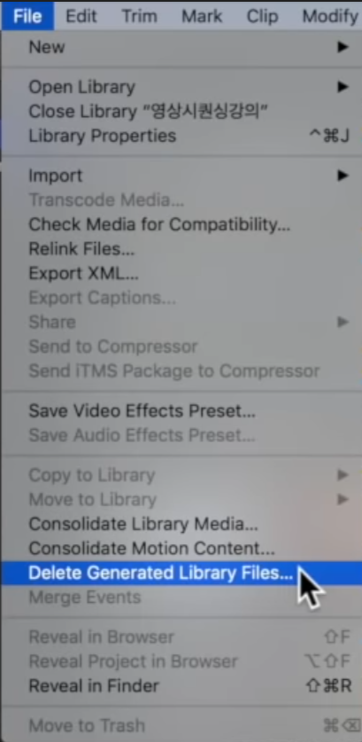
File → Consolidate Library Media... 선택하여 관련 파일들을 하나로 합치시킨다.
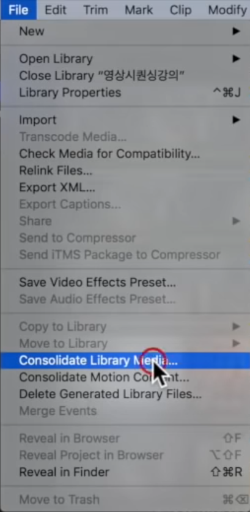